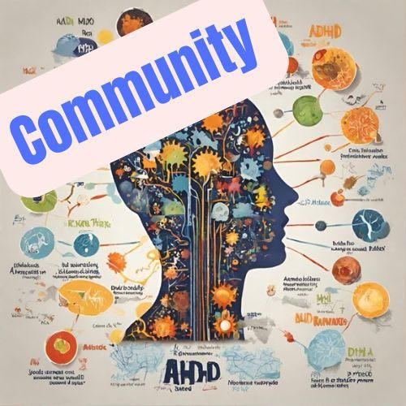

Gemeinsam formen wir eine lebendige Community von Menschen mit besonderen Eigenschaften aka Special Effects, in den Bereichen ADHS/D, Hyperaktivität, Neurodivergenz und dem Autismusspektrum. Dabei sprechen wir Betroffene, Angehörige, indirekt Beteiligte, Interessierte und Experten&innen an.
Keine neuen Infos, alles wie geplant.
Ob du den Raum aktiv mitgestalten und begleiten, Fachwissen teilen oder einfach als Teilnehmer&innen dabei sein möchtest - du bist herzlich willkommen!
Bitte beachte: Es handelt sich um eine Initiative von und für Betroffene und ist ausdrücklich kein ärztlicher oder psychologischer Rat.